Tabular and graphical representations for the distributions of two categorical variables
Taught in: Lesson 2.A.1 · Describing Two Categorical Variables
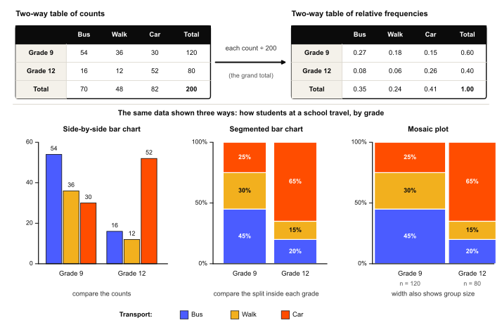
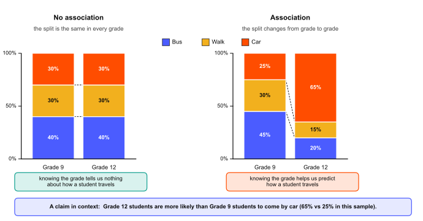
- 2.1.A.1A two-way table, also called a contingency table, can be used to summarize and compare data for two categorical variables. The entries in the cells of the table can be frequencies (i.e., counts) or relative frequencies (i.e., proportions).
- 2.1.A.2Side-by-side bar charts, segmented bar charts, and mosaic plots are examples of graphs used to display the relationship between two categorical variables. In these graphs, the frequency or relative frequency of each category, or level, of one of the categorical variables is displayed for each category of the other categorical variable.
- 2.1.A.3Graphical representations of two categorical variables can be used to compare the relationship of one categorical variable across the levels of the other categorical variable and determine whether the two variables are associated.
- 2.1.B.1Tabular and graphical representations for the distributions of two categorical variables may reveal information that can be used to justify claims about the variable in context.
Summary statistics for two categorical variables
Taught in: Lesson 2.A.1 · Describing Two Categorical Variables
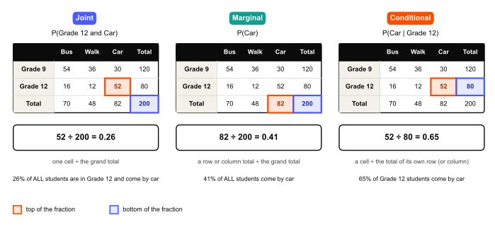

- 2.2.A.1A joint relative frequency in a two-way table is a cell frequency divided by the total for the entire table.
- 2.2.A.2A marginal relative frequency in a two-way table is a row total divided by the total for the entire table or a column total divided by the total for the entire table.
- 2.2.A.3A conditional relative frequency is a relative frequency computed by restricting to a particular level, or category of interest. A conditional relative frequency can be a cell frequency in a row divided by the total for that row or it can be a cell frequency in a column divided by the total for that column.
- 2.2.B.1Summary statistics for two categorical variables can be used to compare distributions for evidence of association between the two variables.
- 2.2.C.1Summary statistics for two categorical variables may reveal information that can be used to justify claims about the variables in context.
Estimating probabilities using simulation
Taught in: Lesson 2.A.2 · Defining Probability


- 2.3.A.1A random process generates results that are determined by chance.
- 2.3.A.2An outcome is the result of one trial of a random process.
- 2.3.A.3An event is a collection of outcomes.
- 2.3.A.4Simulation is a way to model random events such that simulated outcomes closely match real-world outcomes. All possible outcomes are associated with a value to be determined by chance. Record the counts of simulated outcomes and the count total.
- 2.3.A.5The probability of an outcome or event is its long-run relative frequency—that is, its relative frequency over a large number of trials.
- 2.3.A.6The relative frequency of an outcome or event determined from empirical data can be used to estimate the actual, or true, probability of that outcome or event.
- 2.3.A.7The law of large numbers states that for independent trials, as the number of trials increases, the long-run relative frequency of the outcome or event gets closer and closer to a single value.
Introduction to probability
Taught in: Lesson 2.A.2 · Defining Probability
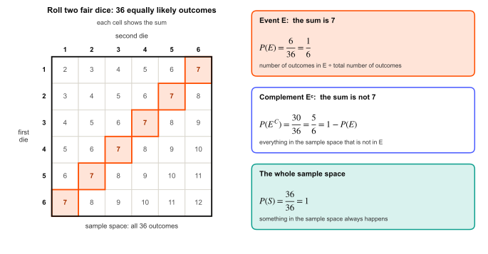

- 2.4.A.1The sample space of a random process is the set of all possible nonoverlapping outcomes. The probability of the sample space is 1.
- 2.4.A.2If all outcomes in the sample space are equally likely, then the theoretical probability an event $E$ will occur is $\dfrac{\text{number of outcomes in event } E}{\text{total number of outcomes in the sample space}}$. The probability of event $E$ occurring is written as $P(E)$.
- 2.4.A.3The probability of an event is a number between 0 and 1, inclusive.
- 2.4.A.4The probability of the complement of an event $E$, which can be written as $E'$, $\overline{E}$, or $E^{C}$ (i.e., the probability of “not $E$”) is equal to $1-P(E)$.
Mutually exclusive events
Taught in: Lesson 2.A.3 · Conditional Probability
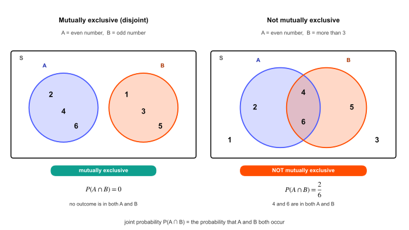
- 2.5.A.1The probability that events $A$ and $B$ both will occur, sometimes called the joint probability, is the probability of the intersection of $A$ and $B$. Joint probability is defined as $P(A \text{ intersect } B)$ or $P(A\cap B)$.
- 2.5.A.2Two events are mutually exclusive, or disjoint, if they cannot occur at the same time. This means that if two events are mutually exclusive, then $P(A\cap B)=0$.
Conditional probability (part 1)
Taught in: Lesson 2.A.3 · Conditional Probability, Lesson 2.A.4 · The Multiplication Rule
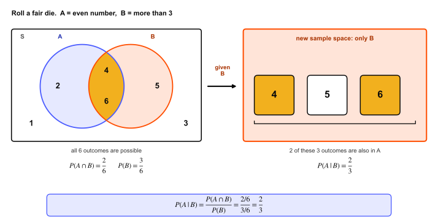

- 2.6.A.1The probability that event $A$ will occur given that event $B$ has occurred is called a conditional probability and is written as $P(A\mid B)$. Conditional probability is defined as $P(A\mid B)=\dfrac{P(A\cap B)}{P(B)}$.
- 2.6.A.2The general multiplication rule states that the probability that events $A$ and $B$ both will occur is equal to the probability that event $A$ will occur multiplied by the conditional probability that event $B$ will occur given that event $A$ has occurred. The multiplication rule is defined as $P(A\cap B)=P(A)\cdot P(B\mid A)$.
Independent events and unions of events
Taught in: Lesson 2.A.5 · Independence & The Addition Rule


- 2.7.A.1Events $A$ and $B$ are independent if and only if knowing whether event $A$ has occurred (or will occur) does not change the probability that event $B$ will occur. When events $A$ and $B$ are independent, then $P(A\mid B)=P(A)$, $P(B\mid A)=P(B)$, and $P(A\cap B)=P(A)\cdot P(B)$.
- 2.7.A.2The probability that event $A$ or event $B$ (or both) will occur is the probability of $A$ union $B$. The probability of the union is defined as $P(A\cup B)$.
- 2.7.A.3$P(A \text{ union } B)=P(A)+P(B)-P(A \text{ intersect } B)$, or $P(A\cup B)=P(A)+P(B)-P(A\cap B)$.
Introduction to random variables and probability distributions
Taught in: Lesson 2.B.1 · Discrete Random Variables
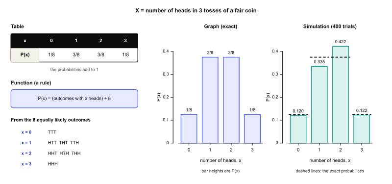

- 2.8.A.1A random variable is a variable whose values have numerical outcomes that result from a random phenomenon.
- 2.8.A.2A probability distribution for a discrete random variable shows the probability associated with every possible value of the random variable. The sum of the probabilities over all possible values of a discrete random variable is 1.
- 2.8.A.3A discrete probability distribution can be determined using the rules of probability or estimated with a simulation.
- 2.8.A.4A discrete probability distribution can be represented as a graph, table, or function showing the probabilities associated with values of a random variable.
- 2.8.A.5A cumulative probability distribution can be represented as a table or function and shows the probability of being less than or equal to each value of the discrete random variable.
Parameters of random variables
Taught in: Lesson 2.B.1 · Discrete Random Variables


- 2.9.A.1A numerical value measuring a characteristic of a probability distribution of a random variable, or a population, is a parameter. The value of a parameter is a single, fixed value.
- 2.9.A.2The expected value (or mean) of a probability distribution is a parameter and is denoted by $E(X)$ or $\mu_X$. For a discrete random variable $X$, the expected value is calculated as $\mu_X=\sum x_i\cdot P(x_i)$, where $x_i$ is the possible value of the random variable and $P(x_i)$ is the probability of the possible value of the random variable. The expected value can be interpreted as the long-run average outcome of the random variable. The discrete random variable can only take on values that are countable or finite.
- 2.9.A.3The standard deviation of a probability distribution is a parameter represented by $SD(X)$ or $\sigma_X$. For a discrete random variable $X$, the standard deviation is calculated as $\sigma_X=\sqrt{\sum(x_i-\mu_X)^2\cdot P(x_i)}$, where $x_i$ is the possible value of the random variable, $\mu_X$ is the mean, and $P(x_i)$ is the probability of the possible value of the random variable. The standard deviation can be interpreted as the typical deviation of the values of the random variable from the mean value (or expected value) of the random variable over the long run. The square of the standard deviation of a random variable is called the variance of the random variable and is denoted as $V(X)$ or $\sigma_X^{2}$.
- 2.9.B.1The mean and standard deviation for the probability distribution of a discrete random variable should be interpreted in the context of a specific population.
The binomial distribution
Taught in: Lesson 2.B.2 · The Binomial Distribution
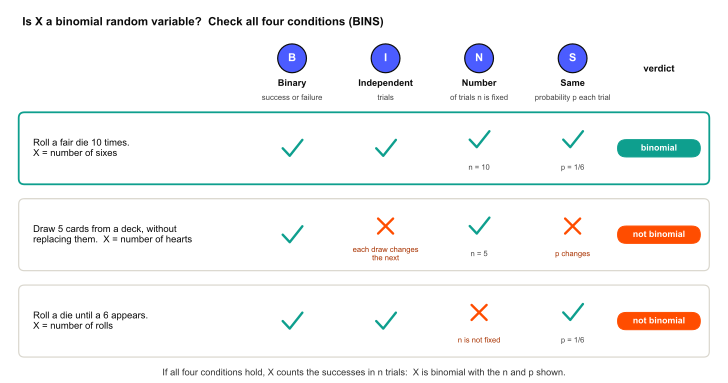

- 2.10.A.1A binomial random variable, X, is a discrete random variable that counts the number of successes in repeated independent trials, n, that have only two possible outcomes (success or failure), with the probability of success p and the probability of failure 1− p.
- 2.10.B.1If a random variable is binomial, its mean, $\mu_X$, is $np$ and its standard deviation, $\sigma_X$, is $\sqrt{np(1-p)}$.
- 2.10.C.1The mean, standard deviation, and probabilities for a binomial distribution should be interpreted in context.
- 2.10.D.1A probability distribution can be constructed using the rules of probability or estimated with a simulation.
- 2.10.E.1The probability that a binomial random variable, $X$, has exactly $x$ successes for $n$ independent trials, when the probability of success is $p$, is calculated as $P(X=x)=\dbinom{n}{x}p^{x}(1-p)^{n-x}$, $x=0,1,2,\ldots,n$. This is called the binomial probability function.
The normal distribution (parts A to D)
Taught in: Lesson 2.B.3 · The Empirical Rule & Standard Normal Curve, Lesson 2.B.4 · Normal Calculations

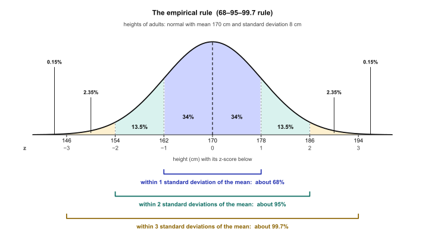
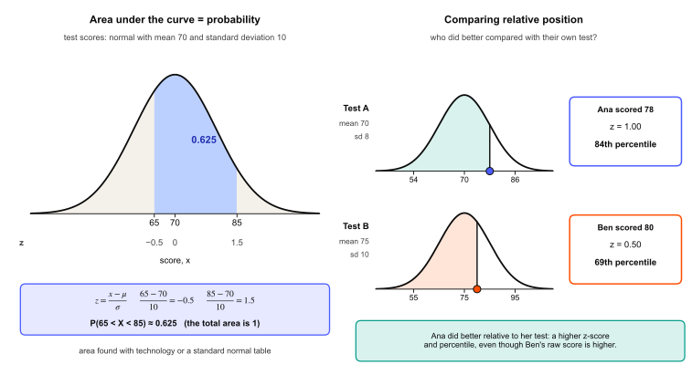
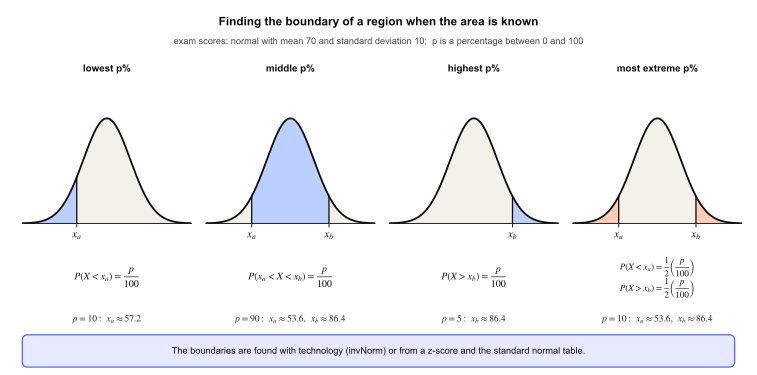
- 2.11.A.1A continuous random variable is a variable that can take on any value within a specified domain. Every interval within the domain has a probability associated with it.
- 2.11.A.2Many continuous random variables are well-modeled by a normal distribution.
- 2.11.A.3A normal distribution can be described as a continuous, unimodal, bell-shaped, and symmetric curve.
- 2.11.A.4A normal curve can be used to model a distribution of data and a continuous random variable.
- 2.11.A.5The normal distribution, or the normal curve, is identified by two parameters, the mean, $\mu$, and the standard deviation, $\sigma$. The smaller the standard deviation, the taller and more concentrated the normal curve is around its mean. The larger the standard deviation, the shorter and less concentrated the normal curve is around its mean.
- 2.11.B.1A standard normal distribution is a normal distribution with mean μ = 0 and standard deviation σ = 1.
- 2.11.C.1The empirical rule can be used to estimate the area of a region under the graph of the normal distribution curve. For a normal distribution, approximately 68% of observations are within 1 standard deviation of the mean, approximately 95% of observations are within 2 standard deviations of the mean, and approximately 99.7% of observations are within 3 standard deviations of the mean. This is called the empirical rule, or the 68–95–99.7 rule.
- 2.11.D.1If the distribution of a random variable is approximately normal, the probability that the random variable takes on values within a particular interval of the random variable is determined by the area under the normal curve within that interval. The total probability or area under the normal curve is 1.
- 2.11.E.1The boundaries of an interval associated with a given area in a normal distribution can be determined using technology or using z-scores and a standard normal table.
- 2.11.E.2Intervals associated with a given area in a normal distribution can be determined by assigning appropriate inequalities to the boundaries of the intervals. To determine the intervals, $p$ is defined as a number between 0 and 100, $x_a$ is the lower bound, and $x_b$ is the upper bound on a normal distribution. 2.11.E.2.i $P(X<x_a)=\dfrac{p}{100}$ means that the lowest $p$% of the values lie to the left of $x_a$. 2.11.E.2.ii $P(x_a<X<x_b)=\dfrac{p}{100}$ means that $p$% of the values lie between $x_a$ and $x_b$. 2.11.E.2.iii $P(X>x_b)=\dfrac{p}{100}$ means that the highest $p$% of the values lie to the right of $x_b$. 2.11.E.2.iv To determine the most extreme $p$% of values on both sides requires dividing the area associated with $p$% into two equal areas on either extreme of the distribution: $P(X<x_a)=\dfrac{1}{2}\left(\dfrac{p}{100}\right)$ and $P(X>x_b)=\dfrac{1}{2}\left(\dfrac{p}{100}\right)$ mean that half of the $p$% most extreme values lie to the left of $x_a$ and half of the $p$% most extreme values lie to the right of $x_b$.
- 2.11.F.1Percentiles and proportions may be used to compare relative positions of individual values within a normal distribution or between normal distributions.
Sampling distributions and the Central Limit Theorem
Taught in: Lesson 2.B.5 · Intro to Sampling Distributions


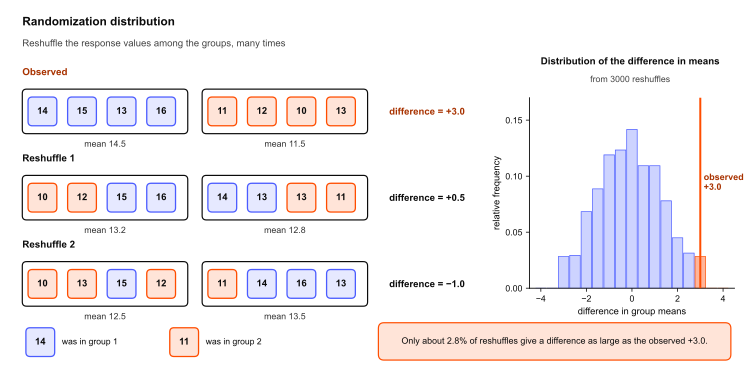
- 2.12.A.1A sampling distribution of a statistic is the distribution of values of the statistic for all possible samples of a given size from a given population.
- 2.12.A.2The sampling distribution of a statistic can be simulated by repeatedly generating a large number of random samples from the population assuming known value(s) for the parameter(s). The value of the statistic is determined and recorded for each sample. The resulting distribution of the sample statistic values approximates the sampling distribution of the statistic.
- 2.12.A.3A randomization distribution is the distribution of a statistic generated by simulation from repeatedly randomly reallocating, or reassigning, the response values to treatment groups. The value of the statistic is determined and recorded for each reallocation, or reassignment. The resulting distribution of the statistic values approximates the sampling distribution of the statistic.
- 2.12.A.4The central limit theorem (CLT) states that the sampling distribution of a mean of a random sample has a shape that can be approximated by a normal distribution. The larger the sample is, the better the approximation will be.